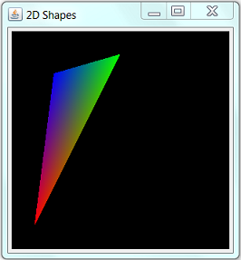
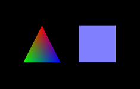
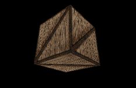
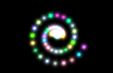
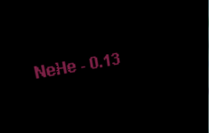
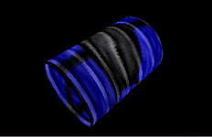
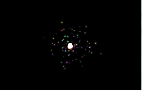
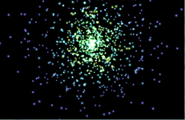

Introduction to JOGL
OpenGL is a cross-platform, language-independent, industrial standard API for producing 3D (and 2D) computer graphics. Graphics cards that claim OpenGL-compliance make use of the hardware acceleration when possible to speed up the graphics rendering process. OpenGL competes with Direct3D on Microsoft Windows platform. The OpenGL mother site is at http://www.opengl.org.
The JOGL (Java Bindings for the OpenGL) allows Java applications to access the OpenGL API for graphics programming. In other words, it is simply a wrapper library for Java application to use OpenGL API. JOGL is open-source and currently maintained by "JogAmp" (Java on Graphics, Audio, Media and Processing) @ http://jogamp.org. JogAMP provides JOGL (3D graphics), JOAL (Java Bindings for OpenAL for 3D Audio) and JOCL (Java Bindings for OpenCL - a Common Language for Graphics Processors).
Alternatives to JOGL include open-source LWJGL (Light-Weight Java Game Library) @ http://lwjgl.org.
This tutorial assumes that you have sufficient knowledge on OpenGL, but new to JOGL. To learn OpenGL, find a good OpenGL book (e.g., the Red book "OpenGL Programming Guide" or Blue Book "OpenGL Superbible"). Nehe production maintains an excellent OpenGL Tutorials (@ http://nehe.gamedev.net). You may also read my OpenGL tutorials.
JOGL 2 supports OpenGL 1.3 to 4.0 and OpenGL ES 1.x and 2.x. JOGL integrates with the AWT, Swing and SWT. It also provides its own native windowing toolkit called NEWT.
This guide is meant for JOGL 2.0 (tested on rc8), which is not compatible with the older (and obsoleted) JOGL 1.x. For JOGL 1.x, read "A Tutorial on JOGL 1.1".
Setting Up JOGL 2.0_rc8
Reference: "Downloading and installing JOGL" @ http://jogamp.org/wiki/index.php/Downloading_and_installing_JOGL.
Step 0: Install JDK
Install JDK, an IDE such as Eclipse/NetBeans or a programming text editor. You need a working Java programming environment to write JOGL programs.
Step 1: Download JOGL
Download the latest "stable" release from JogAMP @ http://jogamp.org/deployment/jogamp-current/archive (or from JogAMP @ http://jogamp.org ⇒ Builds/Downloads ⇒ Current ⇒ zip). Select "jogamp-all-platforms.7z", which contains the JOGL and gluegen JAR-files, Java Native Library (JNI) for all the platforms (e.g., Win32, Win64, Linux, Mac OS), and source-files.
You are also recommended to download the "javadocs" (jogl-javadoc.7z and gluegen-javadoc.7z), "demos" (jogl-demos.7z) and sources.
Step 2: Setup JOGL
- Unzip "
jogamp-all-platforms.7z" (you can unzip ".7z" file using WinRAR, WinZip, or http://www.7-zip.org/).- The
jogl's andgluegen's jar-files are kept in the "jar" sub-directory. - The Java Native JNI Libraries ("
.dll" for Windows, ".so" for Linux, or ".jnilib" for MacOS) are kept in the "lib" sub-directories.
- The
- Create a JOGL binary directory, says "
jogl-2.1" - I shall denote the binary directory as$JOGL_HOME. Create sub-directories "jar", "lib", "src" (optional), "javadoc" (optional) under the$JOGL_HOME.
Copy the necessary jar-file, native libraries of your operating platform, and source-files into the appropriate sub-directories. Read "http://jogamp.org/wiki/index.php/Downloading_and_installing_JOGL".
For example, for Win64, copy "jar\gluegen-rt.jar", "jar\jogl.all.jar", "jar\gluegen-rt-natives-windows-amd64.jar" and "jar\jogl-all-natives-windows-amd64.jar" into "jar"; "lib\windows-amd64\gluegen-rt.dll", "lib\windows-amd64\jogl_desktop.dll", "lib\windows-amd64\nativewindow_awt.dll", "lib\windows-amd64\nativewindow_win32.dll", "lib\windows-amd64\newt.dll" into "lib"; and "gluegen-java-src.zip", "jogl-java-src.zip" into "src". Unzip thejavadocsdownloaded into "javadoc".
Read the "jogl.README.txt".
This step is optional, but it is good to organize the JOGL JAR-files and Java Native Libraries for your operating platform in a single directory.
Step 3a: Customize for Eclipse 4.3
- Create a User Library: We shall first create a Eclipse's User Library called "
jogl-2.1", which specifies the jar-files, native libraries, javadoc, and source files for the JOGL API. All the JOGL projects can then include this user library in its build path.- From "Window" menu ⇒ Preferences ⇒ Java ⇒ Build Path ⇒ User Libraries ⇒ New ⇒ In "User library name", enter "
jogl-2.1". - In "User Library" dialog ⇒ Select "
jogl-2.1" ⇒ "Add External JAR..." ⇒ Navigate to "$JOGL_HOME\jar", and select "gluegen-rt.jar" and "jogl.all.jar". - Expand the "
jogl.all.jar" node, select "Native library location: (none)" ⇒ "Edit..." ⇒ External Folder... ⇒ select "$JOGL_HOME\lib" to provide the path for the native library code (such as "jogl_desktop.dll" for Windows).
Repeat for "gluegen-rt.jar" (for "gluegen-rt.dll"). - (Optional But Recommended) Expand the "
jogl.all.jar" node again ⇒ Select "Javadoc location"⇒ "Edit..."- Specify the javadoc's path (either file: or http:) in "Javadoc URL" if you use an unzip version of the javadoc.
- Specify the javadoc's archive file (either zip or jar) in "Javadoc in archive" if you use a zip file.
index.html" file.
This is needed for Eclipse to display javadoc information about classes and methods. - (Optional But Recommended) You may provide the source files by editing "Source attachment" ⇒ "Edit..." ⇒ "External File..." ⇒ Select the source file in zip form. Source is needed only if you are interested to debug into the JOGL source codes.
- From "Window" menu ⇒ Preferences ⇒ Java ⇒ Build Path ⇒ User Libraries ⇒ New ⇒ In "User library name", enter "
- Include the User Library: For EACH JAVA PROJECT created that uses JOGL, right-click on the project ⇒ "Build Path" ⇒ "Add Libraries" ⇒ Select "User Library" ⇒ Check "
jogl-2.1".
Read "Java Native Library (JNI) Error" if you encounter error "SEVERE: java.lang.UnsatisfiedLinkError: no xxx in java.library.path".
Step 3b: Customize for NetBeans 7.0 (To Check!)
There was a so-called "NetBeans OpenGL Pack", but it seems to be out-dated and does not support JOGL 2 (?!).
We shall create our own JOGL Library as follows:
- Create a JOGL Library:
- From "Tool" ⇒ "Library" ⇒ Click "New Libraries..." ⇒ Enter "
jogl2.0". - Click "Add JAR/Folder..." ⇒ Select "
jogl.all.jar" and "gluegen-rt.jar". - Under the "JavaDoc" tab ⇒ Select the JOGL's javadoc. You could use the zip version for better performance.
- Under the "Source" tab ⇒ Select the JOGL's source. You could use the zip version for better performance.
- From "Tool" ⇒ "Library" ⇒ Click "New Libraries..." ⇒ Enter "
- Include the JOGL Library:
- For EACH of the JOGL project, include the JOGL library. Right-click on the project ⇒ "Properties" ⇒ "Library" ⇒ Under "Compile" tab ⇒ "Add Libraries..." ⇒ Choose the library "
jogl2.0" created earlier. - You also need to include the native library path for each of the project. Right-click the project ⇒ "Set Configuration" ⇒ "Customize..." ⇒ "Run" ⇒ In "VM options", enter "
-Djava.library.path=xxx", where xxx is directory path (e.g.,d:\bin\jogl2.0\lib), that contains the Java Native JNI Libraries ("*.dll" for Windows, "*.so" for Linux or "*.jnilib" for MacOS).
- For EACH of the JOGL project, include the JOGL library. Right-click on the project ⇒ "Properties" ⇒ "Library" ⇒ Under "Compile" tab ⇒ "Add Libraries..." ⇒ Choose the library "
Read "Java Native Library (JNI) Error" if you encounter error "SEVERE: java.lang.UnsatisfiedLinkError: no xxx in java.library.path".
Step 3c: Customize for JDK/Editor
You need to modify two environment variables - CLASSPATH and PATH. Read "Environment Variables For Java Applications" on how to set these environment variables.
Modify the CLASSPATH environment variable to include the full-path filenames of "jogl.all.jar" and "gluegen-rt.jar", for example,
shell> set classpath=.;$JOGL_HOME\lib\jogl.all.jar;$JOGL_HOME\lib\gluegen-rt.jar
where $JOGL_HOME denotes the JOGL installed directory. Take note that you should include the current working directory '.'.
Modified the PATH environment variable to include the full path to the JOGL's "lib" directory for accessing the native libraries (e.g., "jogl_xxx.dll", "gluegen-rt.dll"), for example,
shell> set path=$JOGL_HOME\lib;......
Alternatively, you could include the directory path of the native libraries in Java system's property "java.library.path", via the VM command-line option -Djava.library.path=pathname, for example,
shell> java -Djava.library.path=d:\bin\jogl2.0\lib myjoglapp
Read "Java Native Library (JNI) Error" if you encounter error "SEVERE: java.lang.UnsatisfiedLinkError: no xxx in java.library.path".
Getting Started with JOGL 2.1
OpenGL Drawable: GLCanvas and GLJPanel
An OpenGL drawable is a surface (or canvas) for graphics rendering. JOGL provides two drawables in package javax.media.opengl.awt: GLCanvas and GLJPanel.
GLCanvas: A heavyweight AWT component which is a subclass ofjava.awt.Canvas.
You can create aGLCanvasvia the default constructorGLCanvas(), which construct a newGLCanvascomponent with a default set of OpenGL capabilities, using the default OpenGL capabilities selection mechanism, on the default screen device. For example,GLCanvas canvas = new GLCanvas(); JFrame frame = new JFrame(); // or AWT's Frame frame.getContentPane().add(canvas); // add Component canvas.addGLEventListener(.....);
GLJPanel: A lightweight Swing component which is a subclass ofjavax.swing.JPanel.
Again, You can create aGLJPanelvia the default constructorGLJPanel(), which construct a newGLJPanelcomponent with a default set of OpenGL capabilities, using the default OpenGL capabilities selection mechanism. For example,GLJPanel canvas = new GLJPanel(); JFrame frame = new JFrame(); frame.getContentPane().add(canvas); // or frame.setContentPane(canvas); canvas.addGLEventListener(.....);
The GLCanvas is a heavyweight AWT component which supports hardware acceleration. It is designed as the primary widget for JOGL applications. On the other hand, GLJPanel is a swing-compatible lightweight component, which supports hardware acceleration but is not as fast as GLCanvas. GLJPanel is intended to provide 100% swing integration when the heavyweight GLCanvas cannot be used. Both the GLCanvas and GLJPanel implement a common interface GLAutoDrawable (which in turn implements the interface GLDrawable). These interfaces define the common behaviors expected on GLCanvas and GLJPanel, so that applications can switch between them with minimal code changes.
Beside supporting AWT, Swing and SWT, JOGL 2 also provide its own Native Window Toolkit called NEWT via drawable GLWindow (in package com.jogamp.newt.opengl). I shall discuss NEWT later.
GLEventListener and GLAutoDrawable
The interface GLEventListener (in package javax.media.opengl) declares the following 4 OpenGL event handlers:
init(GLAutoDrawable drawable): called by thedrawableimmediately after the OpenGL context is initialized. It can be used to perform one-time initialization tasks such as setting up of lights and display lists.init()runs only once.dispose(GLAutoDrawable drawable): called by thedrawablebefore the OpenGL context is destroyed. It can be used to release all OpenGL resources, such as memory buffers.display(GLAutoDrawable drawable): called by thedrawableto render OpenGL graphics. It is the most important method.reshape(GLAutoDrawable drawable, int x, int y, int width, int height): called by thedrawablewhen it is first set to visible, and during the first repaint after the it has been resized. It is used to set the view port and projection mode, and view volume.
All these methods are call-back methods. When an OpenGL event is posted on the event-queue, the graphics sub-system calls back the corresponding handler. An OpenGL renderer shall implement the GLEventListener interface.
Recall that GLCanvas and GLJPanel are GLAutoDrawable. The interface GLAutoDrawable defines these abstract methods to add or remove a GLEventListener:
public void addGLEventListener(GLEventListener listener) public void removeGLEventListener(GLEventListener listener)
For example,
GLCanvas canvas = new GLCanvas(); canvas.addGLEventListener(renderer); // add a GLEventListener called renderer // renderer shall provides these handlers // init(GLAutoDrawable drawable) // destroy(GLAutoDrawable drawable) // display(GLAutoDrawable drawable) // reshape(GLAutoDrawable drawable, int x, int y, int width, int height)
Whenever an OpenGL event is fired (e.g., init, display), GLCanvas or GLJPanel invokes the corresponding handler of all its registered GLEventListener(s) (such as init() and display()) with itself as the argument for GLAutoDrawable, as illustrated.
Animator
To perform animation, we need an animator to drive the drawable's display() method in a loop to refresh the display regularly. JOGL provides two animator classes: Animator and FPSAnimator (in package com.jogamp.opengl.util). The commonly-used FPSAnimator can drive the display() of the given drawable at the specified number of frame per seconds (fps). For example,
// Construct a drawable GLCanvas canvas = new GLCanvas(); // or GLJPanle // Construct an FPS animator, which drives drawable's display() at the specified frames per second FPSAnimator animator = new FPSAnimator(canvas, 60); animator.start(); // start the animator animator.pause(); // pause the animator if started animator.resume(); // resume the animator if paused animator.stop(); // stop the animator animator.isStarted(); // started? animator.isAnimating(); // started and not pause? animator.isPause(); // started and pause?
The commonly-used constructors are:
FPSAnimator(GLAutoDrawable drawable, int fps)
// Creates an FPSAnimator with a given target frames-per-second value
// and an initial drawable to animate.
FPSAnimator(GLAutoDrawable drawable, int fps, boolean scheduleAtFixedRate)
// Creates an FPSAnimator with a given target frames-per-second value,
// an initial drawable to animate,
// and a flag indicating whether to use fixed-rate scheduling.
Animator(GLAutoDrawable drawable)
// Creates a new Animator for a particular drawable.
OpenGL Graphics Context
In order to perform rendering, an so-called OpenGL rendering context is required. You can retrieve the graphics context from a drawable as follow:
javax.media.opengl.GL gl = drawable.getGL(); javax.media.opengl.GL2 gl = drawable.getGL().getGL2(); // up to OpenGL 3.0 javax.media.opengl.GL3 gl = drawable.getGL().getGL3(); // up to OpenGL 3.1 javax.media.opengl.GL4 gl = drawable.getGL().getGL4(); // up to OpenGL 4 ...... // Others: GL2GL3, GL2bc, GL4bc, GLES1, GLES2, GL2ES1, GL2ES2
[TODO] To Revise.
JOGL 2.0/2.1 Program Templates
GLCanvas
1 2 3 4 5 6 7 8 9 10 11 12 13 14 15 16 17 18 19 20 21 22 23 24 25 26 27 28 29 30 31 32 33 34 35 36 37 38 39 40 41 42 43 44 45 46 47 48 49 50 51 52 53 54 55 56 57 58 59 60 61 62 63 64 65 66 67 68 69 70 71 72 73 74 75 76 77 78 79 80 81 82 83 84 85 86 87 88 89 90 91 92 93 94 95 96 97 98 99 100 101 102 103 104 105 106 107 108 109 110 111 112 113 114 115 116 117 118 119 120 121 122 123 124 125 126 127 128 129 130 131 132 133 134 135 136 137 138 139 140 |
import java.awt.*; import java.awt.event.*; import javax.swing.*; import javax.media.opengl.GL2; import javax.media.opengl.GLAutoDrawable; import javax.media.opengl.GLEventListener; import javax.media.opengl.awt.GLCanvas; import javax.media.opengl.glu.GLU; import com.jogamp.opengl.util.FPSAnimator; import static javax.media.opengl.GL.*; // GL constants import static javax.media.opengl.GL2.*; // GL2 constants /** * JOGL 2.0 Program Template (GLCanvas) * This is a "Component" which can be added into a top-level "Container". * It also handles the OpenGL events to render graphics. */ @SuppressWarnings("serial") public class JOGL2Setup_GLCanvas extends GLCanvas implements GLEventListener { // Define constants for the top-level container private static String TITLE = "JOGL 2.0 Setup (GLCanvas)"; // window's title private static final int CANVAS_WIDTH = 640; // width of the drawable private static final int CANVAS_HEIGHT = 480; // height of the drawable private static final int FPS = 60; // animator's target frames per second /** The entry main() method to setup the top-level container and animator */ public static void main(String[] args) { // Run the GUI codes in the event-dispatching thread for thread safety SwingUtilities.invokeLater(new Runnable() { @Override public void run() { // Create the OpenGL rendering canvas GLCanvas canvas = new JOGL2Setup_GLCanvas(); canvas.setPreferredSize(new Dimension(CANVAS_WIDTH, CANVAS_HEIGHT)); // Create a animator that drives canvas' display() at the specified FPS. final FPSAnimator animator = new FPSAnimator(canvas, FPS, true); // Create the top-level container final JFrame frame = new JFrame(); // Swing's JFrame or AWT's Frame frame.getContentPane().add(canvas); frame.addWindowListener(new WindowAdapter() { @Override public void windowClosing(WindowEvent e) { // Use a dedicate thread to run the stop() to ensure that the // animator stops before program exits. new Thread() { @Override public void run() { if (animator.isStarted()) animator.stop(); System.exit(0); } }.start(); } }); frame.setTitle(TITLE); frame.pack(); frame.setVisible(true); animator.start(); // start the animation loop } }); } // Setup OpenGL Graphics Renderer private GLU glu; // for the GL Utility /** Constructor to setup the GUI for this Component */ public JOGL2Setup_GLCanvas() { this.addGLEventListener(this); } // ------ Implement methods declared in GLEventListener ------ /** * Called back immediately after the OpenGL context is initialized. Can be used * to perform one-time initialization. Run only once. */ @Override public void init(GLAutoDrawable drawable) { GL2 gl = drawable.getGL().getGL2(); // get the OpenGL graphics context glu = new GLU(); // get GL Utilities gl.glClearColor(0.0f, 0.0f, 0.0f, 0.0f); // set background (clear) color gl.glClearDepth(1.0f); // set clear depth value to farthest gl.glEnable(GL_DEPTH_TEST); // enables depth testing gl.glDepthFunc(GL_LEQUAL); // the type of depth test to do gl.glHint(GL_PERSPECTIVE_CORRECTION_HINT, GL_NICEST); // best perspective correction gl.glShadeModel(GL_SMOOTH); // blends colors nicely, and smoothes out lighting // ----- Your OpenGL initialization code here ----- } /** * Call-back handler for window re-size event. Also called when the drawable is * first set to visible. */ @Override public void reshape(GLAutoDrawable drawable, int x, int y, int width, int height) { GL2 gl = drawable.getGL().getGL2(); // get the OpenGL 2 graphics context if (height == 0) height = 1; // prevent divide by zero float aspect = (float)width / height; // Set the view port (display area) to cover the entire window gl.glViewport(0, 0, width, height); // Setup perspective projection, with aspect ratio matches viewport gl.glMatrixMode(GL_PROJECTION); // choose projection matrix gl.glLoadIdentity(); // reset projection matrix glu.gluPerspective(45.0, aspect, 0.1, 100.0); // fovy, aspect, zNear, zFar // Enable the model-view transform gl.glMatrixMode(GL_MODELVIEW); gl.glLoadIdentity(); // reset } /** * Called back by the animator to perform rendering. */ @Override public void display(GLAutoDrawable drawable) { GL2 gl = drawable.getGL().getGL2(); // get the OpenGL 2 graphics context gl.glClear(GL_COLOR_BUFFER_BIT | GL_DEPTH_BUFFER_BIT); // clear color and depth buffers gl.glLoadIdentity(); // reset the model-view matrix // ----- Your OpenGL rendering code here (Render a white triangle for testing) ----- gl.glTranslatef(0.0f, 0.0f, -6.0f); // translate into the screen gl.glBegin(GL_TRIANGLES); // draw using triangles gl.glVertex3f(0.0f, 1.0f, 0.0f); gl.glVertex3f(-1.0f, -1.0f, 0.0f); gl.glVertex3f(1.0f, -1.0f, 0.0f); gl.glEnd(); } /** * Called back before the OpenGL context is destroyed. Release resource such as buffers. */ @Override public void dispose(GLAutoDrawable drawable) { } } |
Try running the above program, which will show a white triangle on a black screen.
In this template:
- I follow the design of "Component-based Architecture for Rich Internet Applications (RIA)", where the GUI "
Component" (GLCanvasorGLJPanel) and "Container" (JFrame,Frame,JApplet,Applet) are clearly separated. The "Component" can be easily plugged into any of the "Container". - The main class extends
GLCanvas(Component) to provide the OpenGL graphics rendering canvas. It also implementsGLEventListenerand provides handlers forinit(),display(),dispose()andreshape(). - The
main()method:- Allocates a
GLCanvascomponent. - Allocates an
Animatorto drive thedisplay()method of theGLCanvasin a loop to refresh the display. - Allocates a top-level container (Swing's
JFrameor AWT'sFrame), and adds theGLCanvascomponent into the container..
- Allocates a
Using AWT's Frame as Top-Level Container
The above template uses Swing's JFrame as the top-level container. To use AWT's Frame as the top-level window, modify the main() method as follows:
/** The entry main() method to setup the top-level container and animator */ public static void main(String[] args) { GLCanvas canvas = new GLCanvas(); ...... final Frame frame = new Frame(); // instead of Swing's JFrame frame.add(canvas); // instead of Swing's frame.setContentPane() ....... }
[TODO] Check whether GLCanvas is better to use with AWT's Frame or Swing's JFrame if there is no other light-weight components.
Separating the Component and Container Classes
Alternatively, you could separate the renderer Component and the top-level Container into two classes:
1 2 3 4 5 6 7 8 9 10 11 12 13 14 15 16 17 18 19 20 21 22 23 24 25 26 27 28 29 30 31 32 33 34 35 36 37 38 39 40 41 42 43 44 45 46 47 48 49 50 51 52 53 54 55 56 57 58 59 60 61 62 63 64 65 66 67 68 69 70 71 72 73 74 75 76 77 78 79 80 81 82 83 84 85 86 87 88 89 90 |
import javax.media.opengl.GL2; import javax.media.opengl.GLAutoDrawable; import javax.media.opengl.GLEventListener; import javax.media.opengl.awt.GLCanvas; import javax.media.opengl.glu.GLU; import static javax.media.opengl.GL.*; // GL constants import static javax.media.opengl.GL2.*; // GL2 constants /** * JOGL 2.0 Program Template (GLCanvas) * This is a "Component" which can be added into a top-level "Container". * It also handles the OpenGL events to render graphics. */ @SuppressWarnings("serial") public class JOGL2Setup_Renderer extends GLCanvas implements GLEventListener { private GLU glu; // for the GL Utility /** Constructor to setup the GUI for this Component */ public JOGL2Setup_Renderer() { this.addGLEventListener(this); } // ------ Implement methods declared in GLEventListener ------ /** * Called back immediately after the OpenGL context is initialized. Can be used * to perform one-time initialization. Run only once. */ @Override public void init(GLAutoDrawable drawable) { GL2 gl = drawable.getGL().getGL2(); // get the OpenGL graphics context glu = new GLU(); // get GL Utilities gl.glClearColor(0.0f, 0.0f, 0.0f, 0.0f); // set background (clear) color gl.glClearDepth(1.0f); // set clear depth value to farthest gl.glEnable(GL_DEPTH_TEST); // enables depth testing gl.glDepthFunc(GL_LEQUAL); // the type of depth test to do gl.glHint(GL_PERSPECTIVE_CORRECTION_HINT, GL_NICEST); // best perspective correction gl.glShadeModel(GL_SMOOTH); // blends colors nicely, and smoothes out lighting // ----- Your OpenGL initialization code here ----- } /** * Call-back handler for window re-size event. Also called when the drawable is * first set to visible. */ @Override public void reshape(GLAutoDrawable drawable, int x, int y, int width, int height) { GL2 gl = drawable.getGL().getGL2(); // get the OpenGL 2 graphics context if (height == 0) height = 1; // prevent divide by zero float aspect = (float)width / height; // Set the view port (display area) to cover the entire window gl.glViewport(0, 0, width, height); // Setup perspective projection, with aspect ratio matches viewport gl.glMatrixMode(GL_PROJECTION); // choose projection matrix gl.glLoadIdentity(); // reset projection matrix glu.gluPerspective(45.0, aspect, 0.1, 100.0); // fovy, aspect, zNear, zFar // Enable the model-view transform gl.glMatrixMode(GL_MODELVIEW); gl.glLoadIdentity(); // reset } /** * Called back by the animator to perform rendering. */ @Override public void display(GLAutoDrawable drawable) { GL2 gl = drawable.getGL().getGL2(); // get the OpenGL 2 graphics context gl.glClear(GL_COLOR_BUFFER_BIT | GL_DEPTH_BUFFER_BIT); // clear color and depth buffers gl.glLoadIdentity(); // reset the model-view matrix // ----- Your OpenGL rendering code here (render a white triangle for testing) ----- gl.glTranslatef(0.0f, 0.0f, -6.0f); // translate into the screen gl.glBegin(GL_TRIANGLES); // draw using triangles gl.glVertex3f(0.0f, 1.0f, 0.0f); gl.glVertex3f(-1.0f, -1.0f, 0.0f); gl.glVertex3f(1.0f, -1.0f, 0.0f); gl.glEnd(); } /** * Called back before the OpenGL context is destroyed. Release resource such as buffers. */ @Override public void dispose(GLAutoDrawable drawable) { } } |
1 2 3 4 5 6 7 8 9 10 11 12 13 14 15 16 17 18 19 20 21 22 23 24 25 26 27 28 29 30 31 32 33 34 35 36 37 38 39 40 41 42 43 44 45 46 47 48 49 50 51 52 53 54 55 56 57 58 59 60 61 |
import java.awt.*; import java.awt.event.*; import javax.swing.*; import javax.media.opengl.awt.GLCanvas; import com.jogamp.opengl.util.FPSAnimator; /** * JOGL 2.0 Program Template (GLCanvas) * This is the top-level "Container", which allocates and add GLCanvas ("Component") * and animator. */ @SuppressWarnings("serial") public class JOGL2Setup_RendererMain extends JFrame { // Define constants for the top-level container private static String TITLE = "JOGL 2.0 Setup (GLCanvas)"; // window's title private static final int CANVAS_WIDTH = 640; // width of the drawable private static final int CANVAS_HEIGHT = 480; // height of the drawable private static final int FPS = 60; // animator's target frames per second /** Constructor to setup the top-level container and animator */ public JOGL2Setup_RendererMain() { // Create the OpenGL rendering canvas GLCanvas canvas = new JOGL2Setup_Renderer(); canvas.setPreferredSize(new Dimension(CANVAS_WIDTH, CANVAS_HEIGHT)); // Create a animator that drives canvas' display() at the specified FPS. final FPSAnimator animator = new FPSAnimator(canvas, FPS, true); // Create the top-level container frame this.getContentPane().add(canvas); this.addWindowListener(new WindowAdapter() { @Override public void windowClosing(WindowEvent e) { // Use a dedicate thread to run the stop() to ensure that the // animator stops before program exits. new Thread() { @Override public void run() { if (animator.isStarted()) animator.stop(); System.exit(0); } }.start(); } }); this.setTitle(TITLE); this.pack(); this.setVisible(true); animator.start(); // start the animation loop } /** The entry main() method */ public static void main(String[] args) { // Run the GUI codes in the event-dispatching thread for thread safety SwingUtilities.invokeLater(new Runnable() { @Override public void run() { new JOGL2Setup_RendererMain(); // run the constructor } }); } } |
In this approach, all the graphics rendering codes are kept in the renderer (Component) class. The main (Container) class can be left untouched.
GLJPanel
To use the light-weight GLJPanel instead of the heavy-weight GLCanvas, simply change all reference of GLCanvas to GLJPanel.
public class JOGL2Setup_GLJPanel extends GLJPanel implements GLEventListener { ...... /** The entry main() method to setup the top-level container and animator */ public static void main(String[] args) { // Run the GUI codes in the event-dispatching thread for thread safety SwingUtilities.invokeLater(new Runnable() { @Override public void run() { // Create the OpenGL rendering canvas GLJPanel canvas = new JOGL2Setup_GLJPanel(); ...... } } } ...... } GLJPanel canvas = new GLJPanel(); // instead of GLCanvas
Running as an Applet
As we followed the Component-based Architecture in our class design, we can plug the GLCanvas Component into other top-level Container, such as JApplet or Applet easily.
To run the program as an applet, you can simply add an applet launching class (as follow) to launch the main renderer class. Recall that an applet extends javax.swing.JApplet (or java.awt.Frame) and is managed via methods init() (instead of main() of an application), start(), stop() and destroy().
1 2 3 4 5 6 7 8 9 10 11 12 13 14 15 16 17 18 19 20 21 22 23 24 25 26 27 28 29 30 31 32 33 34 35 36 37 38 39 40 41 42 43 44 45 46 47 48 49 50 51 52 53 54 55 56 |
import java.lang.reflect.InvocationTargetException; import javax.media.opengl.awt.GLCanvas; import javax.swing.JApplet; import javax.swing.SwingUtilities; import com.jogamp.opengl.util.FPSAnimator; /** * JOGL 2.0 Applet Template (with GLCanvas and Swing JApplet) * This is the top-level "Container", which allocates and add GLCanvas ("Component") * and animator. */ @SuppressWarnings("serial") public class JOGL2Setup_Applet extends JApplet { // Define constants for top-level container private static final int FPS = 60; // animator's target frames per second FPSAnimator animator; @Override public void init() { // Run the GUI codes in the event-dispatching thread for thread safety try { SwingUtilities.invokeAndWait(new Runnable() { @Override public void run() { // Create the OpenGL rendering canvas GLCanvas canvas = new JOGL2Setup_GLCanvas(); getContentPane().add(canvas); // Create a animator that drives canvas' display() at the specified FPS. animator = new FPSAnimator(canvas, FPS, true); animator.start(); // start the animation loop } }); } catch (InvocationTargetException e) { e.printStackTrace(); } catch (InterruptedException e) { e.printStackTrace(); } } @Override public void destroy() { if (animator.isStarted()) animator.stop(); } @Override public void start() { animator.start(); } @Override public void stop() { if (animator.isStarted()) animator.stop(); } } |
The main() method in the renderer class is ignored by applet.
Running in Full-Screen Mode
Games are often run in full-screen mode without decoration (title, status, scroll bars). The JOGL 2.0 program template for full screen mode operation is as follows:
1 2 3 4 5 6 7 8 9 10 11 12 13 14 15 16 17 18 19 20 21 22 23 24 25 26 27 28 29 30 31 32 33 34 35 36 37 38 39 40 41 42 43 44 45 46 47 48 49 50 51 52 53 54 55 56 57 58 59 60 61 62 63 64 65 66 67 68 69 70 71 72 73 74 75 76 77 78 79 80 81 82 83 84 85 86 87 88 89 90 91 92 93 94 95 96 97 98 99 100 101 102 103 104 105 106 107 108 109 110 111 112 113 114 115 116 117 118 119 120 121 122 123 124 125 126 127 128 129 130 131 132 133 134 135 136 137 138 139 140 141 142 143 144 145 146 147 148 149 150 151 152 153 154 |
import java.awt.*; import java.awt.event.*; import javax.swing.*; import javax.media.opengl.GL2; import javax.media.opengl.GLAnimatorControl; import javax.media.opengl.GLAutoDrawable; import javax.media.opengl.GLEventListener; import javax.media.opengl.awt.GLCanvas; import javax.media.opengl.glu.GLU; import com.jogamp.opengl.util.FPSAnimator; import static javax.media.opengl.GL.*; // GL constants import static javax.media.opengl.GL2.*; // GL2 constants /** * JOGL 2.0 Program Template (GLCanvas) in Full Screen Mode with ESC to quit * This is a "Component" which can be added into a top-level "Container". * It also handles the OpenGL events to render graphics. */ @SuppressWarnings("serial") public class JOGL2Setup_GLCanvasFullScreen extends GLCanvas implements GLEventListener, KeyListener { // Define constants for top-level container private static final int FPS = 60; // animator's target frames per second /** The entry main() method to setup the top-level container and animator */ public static void main(String[] args) { // Run the GUI codes in the event-dispatching thread for thread safety SwingUtilities.invokeLater(new Runnable() { @Override public void run() { // Create the OpenGL rendering canvas GLCanvas canvas = new JOGL2Setup_GLCanvasFullScreen(); // Create a animator that drives canvas' display() at the specified FPS. FPSAnimator animator = new FPSAnimator(canvas, FPS, true); // Create the top-level container frame JFrame frame = new JFrame(); // Swing's JFrame or AWT's Frame frame.getContentPane().add(canvas); frame.setUndecorated(true); // no decoration such as title bar frame.setExtendedState(Frame.MAXIMIZED_BOTH); // full screen mode frame.setVisible(true); animator.start(); // start the animation loop } }); } // Setup OpenGL Graphics Renderer private GLU glu; // for the GL Utility /** Constructor to setup the GUI for this Component */ public JOGL2Setup_GLCanvasFullScreen() { this.addGLEventListener(this); // for handling GLEvents this.addKeyListener(this); // for Handling KeyEvents this.setFocusable(true); this.requestFocus(); } // ------ Implement methods declared in GLEventListener ------ /** * Called back immediately after the OpenGL context is initialized. Can be used * to perform one-time initialization. Run only once. */ @Override public void init(GLAutoDrawable drawable) { GL2 gl = drawable.getGL().getGL2(); // get the OpenGL graphics context glu = new GLU(); // get GL Utilities gl.glClearColor(0.0f, 0.0f, 0.0f, 0.0f); // set background (clear) color gl.glClearDepth(1.0f); // set clear depth value to farthest gl.glEnable(GL_DEPTH_TEST); // enables depth testing gl.glDepthFunc(GL_LEQUAL); // the type of depth test to do gl.glHint(GL_PERSPECTIVE_CORRECTION_HINT, GL_NICEST); // best perspective correction gl.glShadeModel(GL_SMOOTH); // blends colors nicely, and smoothes out lighting // ----- Your OpenGL initialization code here ----- } /** * Call-back handler for window re-size event. Also called when the drawable is * first set to visible. */ @Override public void reshape(GLAutoDrawable drawable, int x, int y, int width, int height) { GL2 gl = drawable.getGL().getGL2(); // get the OpenGL 2 graphics context if (height == 0) height = 1; // prevent divide by zero float aspect = (float)width / height; // Set the view port (display area) to cover the entire window gl.glViewport(0, 0, width, height); // Setup perspective projection, with aspect ratio matches viewport gl.glMatrixMode(GL_PROJECTION); // choose projection matrix gl.glLoadIdentity(); // reset projection matrix glu.gluPerspective(45.0, aspect, 0.1, 100.0); // fovy, aspect, zNear, zFar // Enable the model-view transform gl.glMatrixMode(GL_MODELVIEW); gl.glLoadIdentity(); // reset } /** * Called back by the animator to perform rendering. */ @Override public void display(GLAutoDrawable drawable) { GL2 gl = drawable.getGL().getGL2(); // get the OpenGL 2 graphics context gl.glClear(GL_COLOR_BUFFER_BIT | GL_DEPTH_BUFFER_BIT); // clear color and depth buffers gl.glLoadIdentity(); // reset the model-view matrix // ----- Your OpenGL rendering code here (render a white triangle for testing) ----- gl.glTranslatef(0.0f, 0.0f, -6.0f); // translate into the screen gl.glBegin(GL_TRIANGLES); // draw using triangles gl.glVertex3f(0.0f, 1.0f, 0.0f); gl.glVertex3f(-1.0f, -1.0f, 0.0f); gl.glVertex3f(1.0f, -1.0f, 0.0f); gl.glEnd(); } /** * Called back before the OpenGL context is destroyed. Release resource such as buffers. */ @Override public void dispose(GLAutoDrawable drawable) { } // ------ Implement methods declared in KeyListener ------ @Override public void keyTyped(KeyEvent e) {} @Override public void keyPressed(KeyEvent e) { int keyCode = e.getKeyCode(); switch (keyCode) { case KeyEvent.VK_ESCAPE: // quit // Use a dedicate thread to run the stop() to ensure that the // animator stops before program exits. new Thread() { @Override public void run() { GLAnimatorControl animator = getAnimator(); if (animator.isStarted()) animator.stop(); System.exit(0); } }.start(); break; } } @Override public void keyReleased(KeyEvent e) {} } |
To operate in full-screen mode, set the frame to:
final JFrame frame = new JFrame(); frame.setUndecorated(true); // no decoration such as title and scroll bars frame.setExtendedState(Frame.MAXIMIZED_BOTH); // full screen mode ......
The "window-close" button is no longer available in the full-screen mode. Hence, we use the ESC key to exit the program. The renderer, hence, also implements the KeyListener interface and provide KeyEvent handlers, such as keyPressed() for processing the ESC key..
Note: Read the "Graphics Programming" section on how to switch between full-screen mode and windowed mode, if desired.
Example 1: Rotating 2D Shapes
Modify the GLEventListener handlers init(), display() and reshape() of the template (GLCanvas or GLJPanel) as follows:
public class JOGL2Ex1Rotate2D extends GLJCanvas implements GLEventListener {
......
......
private float angle = 0.0f; // rotation angle of the triangle
/** Called back by the drawable to render OpenGL graphics */
@Override
public void display(GLAutoDrawable drawable) {
render(drawable);
update();
}
// Render a triangle
private void render(GLAutoDrawable drawable) {
// Get the OpenGL graphics context
GL2 gl = drawable.getGL().getGL2();
// Clear the color and the depth buffers
gl.glClear(GL_COLOR_BUFFER_BIT | GL_DEPTH_BUFFER_BIT);
// Reset the view (x, y, z axes back to normal)
gl.glLoadIdentity();
// Draw a triangle
float sin = (float)Math.sin(angle);
float cos = (float)Math.cos(angle);
gl.glBegin(GL_TRIANGLES);
gl.glColor3f(1.0f, 0.0f, 0.0f); // Red
gl.glVertex2d(-cos, -cos);
gl.glColor3f(0.0f, 1.0f, 0.0f); // Green
gl.glVertex2d(0.0f, cos);
gl.glColor3f(0.0f, 0.0f, 1.0f); // Blue
gl.glVertex2d(sin, -sin);
gl.glEnd();
}
// Update the angle of the triangle after each frame
private void update() {
angle += 0.01f;
}
@Override
public void init(GLAutoDrawable drawable) { } // set to empty
@Override
public void dispose(GLAutoDrawable drawable) { } // set to empty
@Override
public void reshape(GLAutoDrawable drawable, int x, int y, int width, int height) { } // set to empty
......
......
}
TRY:
- Using
GLJPanelon Swing'sJFrame. - Use
GLCanvason AWT'sFrame. - Use
GLCanvason AWT'sApplet. - Using
GLJPanelon Swing'sJApplet.
Observe and compare the results.
GLEventListener Handlers
init(): called by the drawable immediately after the OpenGL graphics context is initialized. It can be used to perform one-time initialization tasks such as setting up of lights and display lists. The init() runs only once.
/** Called after context is initialized, for one-time initialization tasks */ @Override public void init(GLAutoDrawable drawable) { // Get the OpenGL graphics context GL2 gl = drawable.getGL().getGL2(); // Get GL Utilities after the GL context created. // glu = GLU.createGLU(); // Enable smooth shading, which blends colors nicely, and smoothes out lighting. gl.glShadeModel(GLLightingFunc.GL_SMOOTH); // Set background color in RGBA. Alpha: 0 (transparent) 1 (opaque) gl.glClearColor(0.0f, 0.0f, 0.0f, 1.0f); // Setup the depth buffer and enable the depth testing gl.glClearDepth(1.0f); // clear z-buffer to the farthest gl.glEnable(GL.GL_DEPTH_TEST); // enables depth testing gl.glDepthFunc(GL.GL_LEQUAL); // the type of depth test to do // Do the best perspective correction gl.glHint(GL2ES1.GL_PERSPECTIVE_CORRECTION_HINT, GL.GL_NICEST); // ----- Your OpenGL initialization code here ----- // ...... }
reshape(): called by the drawable when the drawable is first set to visible, and during the first repaint after the canvas has been resized.
/** Called for the first-time display and after display's size changes. To set up the view port, projection mode and view volume. */ @Override public void reshape(GLAutoDrawable drawable, int x, int y, int width, int height) { // Get the OpenGL graphics context GL2 gl = drawable.getGL().getGL2(); height = (height == 0) ? 1 : height; // Prevent divide by zero float aspect = (float)width / height; // Compute aspect ratio // Set view port to cover full screen gl.glViewport(0, 0, width, height); // Set up the projection matrix - choose perspective view gl.glMatrixMode(GLMatrixFunc.GL_PROJECTION); gl.glLoadIdentity(); // reset // Angle of view (fovy) is 45 degrees (in the up y-direction). Based on this // canvas's aspect ratio. Clipping z-near is 0.1f and z-near is 100.0f. glu.gluPerspective(45.0f, aspect, 0.1f, 100.0f); // fovy, aspect, zNear, zFar // Switch to the model-view transform gl.glMatrixMode(GLMatrixFunc.GL_MODELVIEW); gl.glLoadIdentity(); // reset }
display(): called by the drawable to perform OpenGL graphics rendering.
/** Called to render graphics */ @Override public void display(GLAutoDrawable drawable) { // Get the OpenGL graphics context GL2 gl = drawable.getGL().getGL2(); // Clear the color and the depth buffers gl.glClear(GL.GL_COLOR_BUFFER_BIT | GL.GL_DEPTH_BUFFER_BIT); // Reset the view (x, y, z axes back to normal) gl.glLoadIdentity(); // ----- Your OpenGL rendering code here ----- // ...... }
disposed(): called by the drawbale before the OpenGL context is destroyed. It can be used to release all OpenGL resources, such as memory buffers.
@Override
public void disposed(GLAutoDrawable drawable) {
// Hardly used.
}
Example 2: Rotating 3D Shapes
The following example show a color-pyramid and color-cube (Nehe Lesson #5).

1 2 3 4 5 6 7 8 9 10 11 12 13 14 15 16 17 18 19 20 21 22 23 24 25 26 27 28 29 30 31 32 33 34 35 36 37 38 39 40 41 42 43 44 45 46 47 48 49 50 51 52 53 54 55 56 57 58 59 60 61 62 63 64 65 66 67 68 69 70 71 72 73 74 75 76 77 78 79 80 81 82 83 84 85 86 87 88 89 90 91 92 93 94 95 96 97 98 99 100 101 102 103 104 105 106 107 108 109 110 111 112 113 114 115 116 117 118 119 120 121 122 123 124 125 126 127 128 129 130 131 132 133 134 135 136 137 138 139 140 141 142 143 144 145 146 147 148 149 150 151 152 153 154 155 156 157 158 159 160 161 162 163 164 165 166 167 168 169 170 171 172 173 174 175 176 177 178 179 180 181 182 183 184 185 186 187 188 189 190 191 192 193 194 195 196 197 198 199 200 201 202 203 204 205 206 207 208 209 210 211 212 213 214 215 216 217 218 219 220 221 222 223 224 225 226 227 |
import java.awt.*; import java.awt.event.*; import javax.swing.*; import javax.media.opengl.GL2; import javax.media.opengl.GLAutoDrawable; import javax.media.opengl.GLEventListener; import javax.media.opengl.awt.GLCanvas; import javax.media.opengl.glu.GLU; import com.jogamp.opengl.util.FPSAnimator; import static javax.media.opengl.GL.*; // GL constants import static javax.media.opengl.GL2.*; // GL2 constants /** * JOGL 2.0 Example 2: Rotating 3D Shapes (GLCanvas) */ @SuppressWarnings("serial") public class JOGL2Ex2Rotate3D_GLCanvas extends GLCanvas implements GLEventListener { // Define constants for the top-level container private static String TITLE = "Rotating 3D Shapes (GLCanvas)"; // window's title private static final int CANVAS_WIDTH = 320; // width of the drawable private static final int CANVAS_HEIGHT = 240; // height of the drawable private static final int FPS = 60; // animator's target frames per second /** The entry main() method to setup the top-level container and animator */ public static void main(String[] args) { // Run the GUI codes in the event-dispatching thread for thread safety SwingUtilities.invokeLater(new Runnable() { @Override public void run() { // Create the OpenGL rendering canvas GLCanvas canvas = new JOGL2Ex2Rotate3D_GLCanvas(); canvas.setPreferredSize(new Dimension(CANVAS_WIDTH, CANVAS_HEIGHT)); // Create a animator that drives canvas' display() at the specified FPS. final FPSAnimator animator = new FPSAnimator(canvas, FPS, true); // Create the top-level container final JFrame frame = new JFrame(); // Swing's JFrame or AWT's Frame frame.getContentPane().add(canvas); frame.addWindowListener(new WindowAdapter() { @Override public void windowClosing(WindowEvent e) { // Use a dedicate thread to run the stop() to ensure that the // animator stops before program exits. new Thread() { @Override public void run() { if (animator.isStarted()) animator.stop(); System.exit(0); } }.start(); } }); frame.setTitle(TITLE); frame.pack(); frame.setVisible(true); animator.start(); // start the animation loop } }); } // Setup OpenGL Graphics Renderer private GLU glu; // for the GL Utility private float anglePyramid = 0; // rotational angle in degree for pyramid private float angleCube = 0; // rotational angle in degree for cube private float speedPyramid = 2.0f; // rotational speed for pyramid private float speedCube = -1.5f; // rotational speed for cube /** Constructor to setup the GUI for this Component */ public JOGL2Ex2Rotate3D_GLCanvas() { this.addGLEventListener(this); } // ------ Implement methods declared in GLEventListener ------ /** * Called back immediately after the OpenGL context is initialized. Can be used * to perform one-time initialization. Run only once. */ @Override public void init(GLAutoDrawable drawable) { GL2 gl = drawable.getGL().getGL2(); // get the OpenGL graphics context glu = new GLU(); // get GL Utilities gl.glClearColor(0.0f, 0.0f, 0.0f, 0.0f); // set background (clear) color gl.glClearDepth(1.0f); // set clear depth value to farthest gl.glEnable(GL_DEPTH_TEST); // enables depth testing gl.glDepthFunc(GL_LEQUAL); // the type of depth test to do gl.glHint(GL_PERSPECTIVE_CORRECTION_HINT, GL_NICEST); // best perspective correction gl.glShadeModel(GL_SMOOTH); // blends colors nicely, and smoothes out lighting } /** * Call-back handler for window re-size event. Also called when the drawable is * first set to visible. */ @Override public void reshape(GLAutoDrawable drawable, int x, int y, int width, int height) { GL2 gl = drawable.getGL().getGL2(); // get the OpenGL 2 graphics context if (height == 0) height = 1; // prevent divide by zero float aspect = (float)width / height; // Set the view port (display area) to cover the entire window gl.glViewport(0, 0, width, height); // Setup perspective projection, with aspect ratio matches viewport gl.glMatrixMode(GL_PROJECTION); // choose projection matrix gl.glLoadIdentity(); // reset projection matrix glu.gluPerspective(45.0, aspect, 0.1, 100.0); // fovy, aspect, zNear, zFar // Enable the model-view transform gl.glMatrixMode(GL_MODELVIEW); gl.glLoadIdentity(); // reset } /** * Called back by the animator to perform rendering. */ @Override public void display(GLAutoDrawable drawable) { GL2 gl = drawable.getGL().getGL2(); // get the OpenGL 2 graphics context gl.glClear(GL_COLOR_BUFFER_BIT | GL_DEPTH_BUFFER_BIT); // clear color and depth buffers // ----- Render the Pyramid ----- gl.glLoadIdentity(); // reset the model-view matrix gl.glTranslatef(-1.6f, 0.0f, -6.0f); // translate left and into the screen gl.glRotatef(anglePyramid, -0.2f, 1.0f, 0.0f); // rotate about the y-axis gl.glBegin(GL_TRIANGLES); // of the pyramid // Font-face triangle gl.glColor3f(1.0f, 0.0f, 0.0f); // Red gl.glVertex3f(0.0f, 1.0f, 0.0f); gl.glColor3f(0.0f, 1.0f, 0.0f); // Green gl.glVertex3f(-1.0f, -1.0f, 1.0f); gl.glColor3f(0.0f, 0.0f, 1.0f); // Blue gl.glVertex3f(1.0f, -1.0f, 1.0f); // Right-face triangle gl.glColor3f(1.0f, 0.0f, 0.0f); // Red gl.glVertex3f(0.0f, 1.0f, 0.0f); gl.glColor3f(0.0f, 0.0f, 1.0f); // Blue gl.glVertex3f(1.0f, -1.0f, 1.0f); gl.glColor3f(0.0f, 1.0f, 0.0f); // Green gl.glVertex3f(1.0f, -1.0f, -1.0f); // Back-face triangle gl.glColor3f(1.0f, 0.0f, 0.0f); // Red gl.glVertex3f(0.0f, 1.0f, 0.0f); gl.glColor3f(0.0f, 1.0f, 0.0f); // Green gl.glVertex3f(1.0f, -1.0f, -1.0f); gl.glColor3f(0.0f, 0.0f, 1.0f); // Blue gl.glVertex3f(-1.0f, -1.0f, -1.0f); // Left-face triangle gl.glColor3f(1.0f, 0.0f, 0.0f); // Red gl.glVertex3f(0.0f, 1.0f, 0.0f); gl.glColor3f(0.0f, 0.0f, 1.0f); // Blue gl.glVertex3f(-1.0f, -1.0f, -1.0f); gl.glColor3f(0.0f, 1.0f, 0.0f); // Green gl.glVertex3f(-1.0f, -1.0f, 1.0f); gl.glEnd(); // of the pyramid // ----- Render the Color Cube ----- gl.glLoadIdentity(); // reset the current model-view matrix gl.glTranslatef(1.6f, 0.0f, -7.0f); // translate right and into the screen gl.glRotatef(angleCube, 1.0f, 1.0f, 1.0f); // rotate about the x, y and z-axes gl.glBegin(GL_QUADS); // of the color cube // Top-face gl.glColor3f(0.0f, 1.0f, 0.0f); // green gl.glVertex3f(1.0f, 1.0f, -1.0f); gl.glVertex3f(-1.0f, 1.0f, -1.0f); gl.glVertex3f(-1.0f, 1.0f, 1.0f); gl.glVertex3f(1.0f, 1.0f, 1.0f); // Bottom-face gl.glColor3f(1.0f, 0.5f, 0.0f); // orange gl.glVertex3f(1.0f, -1.0f, 1.0f); gl.glVertex3f(-1.0f, -1.0f, 1.0f); gl.glVertex3f(-1.0f, -1.0f, -1.0f); gl.glVertex3f(1.0f, -1.0f, -1.0f); // Front-face gl.glColor3f(1.0f, 0.0f, 0.0f); // red gl.glVertex3f(1.0f, 1.0f, 1.0f); gl.glVertex3f(-1.0f, 1.0f, 1.0f); gl.glVertex3f(-1.0f, -1.0f, 1.0f); gl.glVertex3f(1.0f, -1.0f, 1.0f); // Back-face gl.glColor3f(1.0f, 1.0f, 0.0f); // yellow gl.glVertex3f(1.0f, -1.0f, -1.0f); gl.glVertex3f(-1.0f, -1.0f, -1.0f); gl.glVertex3f(-1.0f, 1.0f, -1.0f); gl.glVertex3f(1.0f, 1.0f, -1.0f); // Left-face gl.glColor3f(0.0f, 0.0f, 1.0f); // blue gl.glVertex3f(-1.0f, 1.0f, 1.0f); gl.glVertex3f(-1.0f, 1.0f, -1.0f); gl.glVertex3f(-1.0f, -1.0f, -1.0f); gl.glVertex3f(-1.0f, -1.0f, 1.0f); // Right-face gl.glColor3f(1.0f, 0.0f, 1.0f); // magenta gl.glVertex3f(1.0f, 1.0f, -1.0f); gl.glVertex3f(1.0f, 1.0f, 1.0f); gl.glVertex3f(1.0f, -1.0f, 1.0f); gl.glVertex3f(1.0f, -1.0f, -1.0f); gl.glEnd(); // of the color cube // Update the rotational angle after each refresh. anglePyramid += speedPyramid; angleCube += speedCube; } /** * Called back before the OpenGL context is destroyed. Release resource such as buffers. */ @Override public void dispose(GLAutoDrawable drawable) { } } |
TRY:
- Modify the program to run as an applet.
- Modify the program to run in full screen mode.
JOGL's NEWT (Native Windowing Toolkit) - GLWindow
Besides relying on AWT/Swing, JOGL provides its own windowing toolkit called NEWT. The base class for NEWT is GLWindow. To allocate a GLWindow:
// Get the default OpenGL profile, reflecting the best for your running platform GLProfile glp = GLProfile.getDefault(); // Specifies a set of OpenGL capabilities, based on your profile. GLCapabilities caps = new GLCapabilities(glp); // Allocate a GLWindow and add GLEventListener GLWindow window = GLWindow.create(caps); window.addGLEventListener(......);
Let's rewrite Example 1 using JOGL's NEWT.
1 2 3 4 5 6 7 8 9 10 11 12 13 14 15 16 17 18 19 20 21 22 23 24 25 26 27 28 29 30 31 32 33 34 35 36 37 38 39 40 41 42 43 44 45 46 47 48 49 50 51 52 53 54 55 56 57 58 59 60 61 62 63 64 65 66 67 68 69 70 71 72 73 74 75 76 77 78 79 80 81 82 83 84 85 86 87 88 89 90 91 92 93 94 95 96 97 98 99 100 |
import javax.media.opengl.GL;
import javax.media.opengl.GL2;
import javax.media.opengl.GLAutoDrawable;
import javax.media.opengl.GLCapabilities;
import javax.media.opengl.GLEventListener;
import javax.media.opengl.GLProfile;
import com.jogamp.newt.event.WindowAdapter;
import com.jogamp.newt.event.WindowEvent;
import com.jogamp.newt.opengl.GLWindow;
import com.jogamp.opengl.util.FPSAnimator;
public class JOGL2NewtDemo implements GLEventListener { // Renderer
private static String TITLE = "JOGL 2 with NEWT"; // window's title
private static final int WINDOW_WIDTH = 640; // width of the drawable
private static final int WINDOW_HEIGHT = 480; // height of the drawable
private static final int FPS = 60; // animator's target frames per second
private double theta = 0.0f; // rotational angle
/** Constructor */
public JOGL2NewtDemo() {}
/** The entry main() method */
public static void main(String[] args) {
// Get the default OpenGL profile, reflecting the best for your running platform
GLProfile glp = GLProfile.getDefault();
// Specifies a set of OpenGL capabilities, based on your profile.
GLCapabilities caps = new GLCapabilities(glp);
// Create the OpenGL rendering canvas
GLWindow window = GLWindow.create(caps);
// Create a animator that drives canvas' display() at the specified FPS.
final FPSAnimator animator = new FPSAnimator(window, FPS, true);
window.addWindowListener(new WindowAdapter() {
@Override
public void windowDestroyNotify(WindowEvent arg0) {
// Use a dedicate thread to run the stop() to ensure that the
// animator stops before program exits.
new Thread() {
@Override
public void run() {
animator.stop(); // stop the animator loop
System.exit(0);
}
}.start();
};
});
window.addGLEventListener(new JOGL2NewtDemo());
window.setSize(WINDOW_WIDTH, WINDOW_HEIGHT);
window.setTitle(TITLE);
window.setVisible(true);
animator.start();
}
/** Called back by the drawable to render OpenGL graphics */
@Override
public void display(GLAutoDrawable drawable) {
render(drawable);
update();
}
/** Render the shape (triangle) */
private void render(GLAutoDrawable drawable) {
GL2 gl = drawable.getGL().getGL2();
gl.glClear(GL.GL_COLOR_BUFFER_BIT);
// Draw a triangle
float sine = (float)Math.sin(theta);
float cosine = (float)Math.cos(theta);
gl.glBegin(GL.GL_TRIANGLES);
gl.glColor3f(1, 0, 0);
gl.glVertex2d(-cosine, -cosine);
gl.glColor3f(0, 1, 0);
gl.glVertex2d(0, cosine);
gl.glColor3f(0, 0, 1);
gl.glVertex2d(sine, -sine);
gl.glEnd();
}
/** Update the rotation angle after each frame refresh */
private void update() {
theta += 0.01;
}
/** Called back immediately after the OpenGL context is initialized */
@Override
public void init(GLAutoDrawable drawable) { }
/** Called back before the OpenGL context is destroyed. */
@Override
public void dispose(GLAutoDrawable drawable) { }
/** Called back by the drawable when it is first set to visible,
and during the first repaint after the it has been resized. */
@Override
public void reshape(GLAutoDrawable drawable, int x, int y, int weight, int height) { }
}
|
OpenGL Profile and Capabilities
[TODO] Revised
You can create drawables to support different OpenGL profiles and capabilities:
- First, construct a
GLProfile, which specifies the target profile of your application, e.g.,OpenGL2,OpenGL3,OpenGL4,OpenGL|ES1,OpenGL|ES2, etc. The profiles are beyond the scope of this tutorial. Read "JOGL 2 - OpenGL Profiles explained" if you are interested. We shall use the following statement to get the default profile, which best reflects your running platform.// Get the default OpenGL profile, reflecting the best for your running platform GLProfile glp = GLProfile.getDefault(); - Next, construct a
GLCapabilities, based on your chosen profile, which maintain a set of OpenGL capabilities.// Specifies a set of OpenGL capabilities, based on your profile. GLCapabilities caps = new GLCapabilities(glp); - Now, you can construct your desired drawing canvas:
GLCanvasfor AWT,GLJPanelfor Swing, andGLWindowfor Newt. All these canvas areGLDrawable.// Allocate a GLDrawable, based on your OpenGL capabilities. // Using GLCanvas for AWT GLCanvas canvas = new GLCanvas(caps); this.add(canvas); // "this" is a subclass of AWT's Frame // Using GLJPanel for Swing GLJPanel panel = new GLJPanel(caps); this.setContentPane(panel); // "this" is a subclass of Swing's JFrame // Using GLWindow for Newt GLWindow window = GLWindow.create(caps); window.setVisible(true);
Nehe's JOGL 2 Port
I have ported some of the Nehe's lessons into JOGL. Refer to Nehe for the problem descriptions.
Setting Up
Download Source Codes: "JOGL2Nehe01to08.zip".
- Nehe's Lesson #1 "Setting Up":
- UsingGLCanvas:JOGL2Setup_GLCanvas.java.
- UsingGLJPanel:JOGL2Setup_GLJPanel.java.
- Run as an applet withGLCanvas:JOGL2Setup_Applet.java.
- Run in full-screen mode:JOGL2Setup_GLCanvasFullScreen.
Expected output: blank black screen.
OpenGL Basics
I consider Lessons #2 - #8 as OpenGL basic lessons, that are extremely important! I use GLCanvas on Swing's JFrame for all these exercises, as GLJPanel does not seem to run properly.
Download Source Codes: "JOGL2Nehe01To08.zip".
- Nehe's Lesson #2 "Basic Shape":
JOGL2Nehe02Basic2D.java.
- Nehe's Lesson #3 "Color":
J2Nehe03Color.java.
 - Nehe's Lesson #4 "Rotation":
JOGL2Nehe04Rotation.java.
- Nehe's Lesson #5 "3D Shape":
JOGL2Nehe05Shape3D.java.
- Nehe's Lesson #6 "Texture":
JOGL2Nehe06Texture.java.
- Nehe's Lesson #7 "Texture Filter, Lighting, and key-controlled":
JOGL2Nehe07TextureFilterLightKey.java.
 - Nehe's Lesson #8 "Blending":
JOGL2Nehe08Blending.javaandJOGL2Nehe08Blending_FullScreen.java
 Click imge to run the applet (not working - JNLP not supported under my server?!)
Click imge to run the applet (not working - JNLP not supported under my server?!)
OpenGL Intermediates
Download Source Code: "JOGL2NeheIntermediate.zip".
- Nehe's Lesson #9 "Moving Bitmaps in 3D space":
J2NeheEx09Stars.java.
 - Nehe's Lesson #10: Building and moving in a 3D world
J2NeheEx10World3D.java.
- Nehe's Lesson #11 "Waving Effect":
J2NeheEx11Flag.java.
- Nehe's Lesson #12 "Using Display List":
J2NeheEx12DisplayList.java.
- Nehe's Lesson #13 "2D Texts":
J2NeheEx13Text2D.java.
- Nehe's Lesson #14 "3D Texts":
J2NeheEx14Text3D.java.
 - Nehe's Lesson #16 "Fog Effect":
J2NeheEx16Fog.java.
- Nehe's Lesson #18 "Quadrics":
J2NeheEx18Quadrics.java.
 - Nehe's Lesson #19 "Particle Engine": (a)
J2NeheEx19Particle.java, (b)J2NeheEx19Firework.java.
  - Nehe's Lesson #26 "Reflection":
J2NeheEx26Reflection.java.
More JOGL Ports/Examples
JOGL comes with many excellent demos. You can get the latest demo source codes from https://github.com/sgothel/ ⇒ "jogl demos" ⇒ "src" ⇒ "demos". However, many of these demos are not properly explained (?).
Gears/JGears
You can get the source codes "Gears.java" from JOGL demos; or get the latest code from https://github.com/sgothel/ ⇒ "jogl demos" ⇒ "src" ⇒ "demos" ⇒ "gears" ⇒ "Gears.java".
"Gears.java" run the JOGL's NEWT window. [TODO] more.
There is a variation called "JGears.java", which included 2 images and texts in the display.
[TODO] Photo-Cube
[TODO] Bouncing Balls inside a Cube
[TODO] JOGL Demos
[TODO] Redbook Examples
Deploying JOGL Applications, Applets and Web Start Apps
Read "Java's Rich Internet Applications (RIA) - Applets & Web Start Apps".
Deploying JOGL 2.0 WebStart App
Jarring Up JOGL App
Jar-up your JOGL application's classes and relevant resources.
Preparing JNLP file
<?xml version="1.0" encoding="UTF-8"?>
<jnlp>
<information>
<title>My JOGL App</title>
<vendor>My Company</vendor>
<offline-allowed />
</information>
<resources>
<j2se version="1.4+" href="http://java.sun.com/products/autodl/j2se" />
<jar href="my_app.jar" main="true" />
<extension name="jogl-all-awt" href="http://jogamp.org/deployment/v2.0-rc8/jogl-all-awt.jnlp" />
</resources>
<application-desc main-class="mydemo.myAppMain" />
</jnlp>
The above <extension> is meant for JOGL application. The necessary JOGL jar-files are provide by the jogamp server. Choose the appropriate JOGL version that you used to compile your application, e.g., "v2.0-rc8".
Deploying JOGL 2.0 Applet
Reference:
- Java Network Launch Protocol (JNLP) Support @ http://www.oracle.com/technetwork/java/javase/jnlp-136707.html
- JNLPAppletLauncher @ http://jogamp.org/applet-launcher/www/.
- Test page for JOGL Applets @ http://jogamp.org/deployment/jogamp-current/jogl-test-applets.html.
- JOGL: Applets @ http://jausoft.com/blog/2009/07/03/jogl-applets-part-1.
JNLP Applet (JDK 6u10)
Starting from JDK 6u10 Standard "JNLP Applets" are supported, in which the Java Plug-In (for web browser) provides support for launching applets directly from JNLP files. To launch an applet from a JNLP file, use the "jnlp_href" parameter in the <applet> tag.
For example, the following HTML file contains an applet which references JNLP file "my_applet.jnlp".
<applet width="300" height="300" > <param name="jnlp_href" value="my_applet.jnlp"> </applet>
The JNLP file "my_applet.jnlp" is as follows:
<?xml version="1.0" encoding="UTF-8"?>
<jnlp href="my_applet.jnlp">
<information>
<title>My Applet</title>
<vendor>My Company</vendor>
<offline-allowed />
</information>
<resources>
<j2se version="1.6+" />
<jar href="my_applet.jar" main="true" />
<extension name="jogl-all-awt" href="http://jogamp.org/deployment/v2.0-rc8/jogl-all-awt.jnlp" />
</resources>
<applet-desc
name="My Applet"
main-class="mydemo.MyApplet"
width="300"
height="300">
</applet-desc>
</jnlp>
The above extension is meant for JOGL app, where you should choose the appropriate JOGL version that you used to compile your application, e.g., "v2.0-rc8".
Applet Launcher (JDK 6u10)
JDK 1.6u10 has greatly improved the efficiency of Java applet, and it is now feasible and practical to deploy a huge Java program as an applet, via a so-called "Applet Launcher".
JNLP applet is support since JDK 6u14. However, you may need to fall back to the Applet-Launcher to support the older releases.
Depolying JOGL Applet as "Standard JNLP Applet" / "JNLPAppletLauncher"
We shall deploy JOGL applet as "JNLP Applet" if the web browser JRE Plug-in supports it (above JDK 6u14); otherwise, we fall back to JNLPAppletLauncher, as follow:
Prepare a JNLP file as follow:
<?xml version="1.0" encoding="utf-8"?>
<jnlp>
<information>
<title>JOGL Test</title>
<vendor>SomeOne</vendor>
</information>
<resources>
<j2se version="1.6+"/>
<property name="sun.java2d.noddraw" value="true"/>
<jar href="YourJoglApp.jar" main="true"/>
<extension name="jogl-all-awt" href="http://jogamp.org/deployment/v2.0-rc8/jogl-all-awt.jnlp" />
</resources>
<applet-desc
name="Test Applet"
main-class="YourAppletClass"
width="640"
height="480">
</applet-desc>
</jnlp>
In the <extension>'s href, set to the appropriate JOGL version that you used to compile your program, e.g., "v2.0-rc8" in my case.
Use the following <applet> tag with a reference to the JNLP file in parameter "jnlp_href":
<applet code="org.jdesktop.applet.util.JNLPAppletLauncher"
width=600
height=400
archive=
"http://jogamp.org/deployment/v2.0-rc8/jar/applet-launcher.jar,
http://jogamp.org/deployment/v2.0-rc8/jar/nativewindow.all.jar,
http://jogamp.org/deployment/v2.0-rc8/jar/gluegen-rt.jar,
http://jogamp.org/deployment/v2.0-rc8/jar/jogl.all.jar,
YourJOGLApp.jar">
<param name="codebase_lookup" value="false">
<param name="subapplet.classname" value="YourAppletClass">
<param name="subapplet.displayname" value="JOGL Applet Test">
<param name="noddraw.check" value="true">
<param name="progressbar" value="true">
<param name="jnlpNumExtensions" value="1">
<param name="jnlpExtension1" value="http://jogamp.org/deployment/v2.0-rc8/jogl-core.jnlp">
<param name="java_arguments" value="-Dsun.java2d.noddraw=true">
<param name="jnlp_href" value="YourJnlpFile.jnlp">
</applet>
where:
- Attribute "
code" is pointing at "JNLPAppletLauncher", which is downloaded fromhttp://jogamp.org/deployment/v2.0-rc8/jar/applet-launcher.jar, instead of your local server. - Attribute "
archive" includes all the jar files for running JOGL program. Again, they are downloaded from the server. "archive" also include your JOGL JAR file. - Attributes "
width" and "height" specify the width and height of your applet's display area inside the browser's window. - The name of your main applet is specified in the parameter "
subapplet.classname". - The parameter "
codebase_lookup" is set tofalse, as this applet does not need to fetch other files from your local server's code base path. - The parameter "
noddraw.check" is set to true, to check if DirectDraw is enabled and, if so, will prompt the user to disable it for all applets. DirectDraw is incompatible with OpenGL. Disabling it is unlikely to slow down other non-3D applets significantly.
REFERENCES & RESOURCES
- JOGL mother site @ http://jogamp.org/jogl/www/; JOGL tutorial @ http://jogamp.org/wiki/index.php/Jogl_Tutorial; JOGL Wiki @ http://jogamp.org/wiki/index.php/Main_Page.
- JOGL Developer and master repository (including source and demos) @ https://github.com/sgothel/.
- OpenGL mother site @ www.opengl.org.
- Nehe OpenGL tutorials @ http://nehe.gamedev.net.
- OpenGL Programming Guide (Red book); OpenGL Superbible (Blue book)